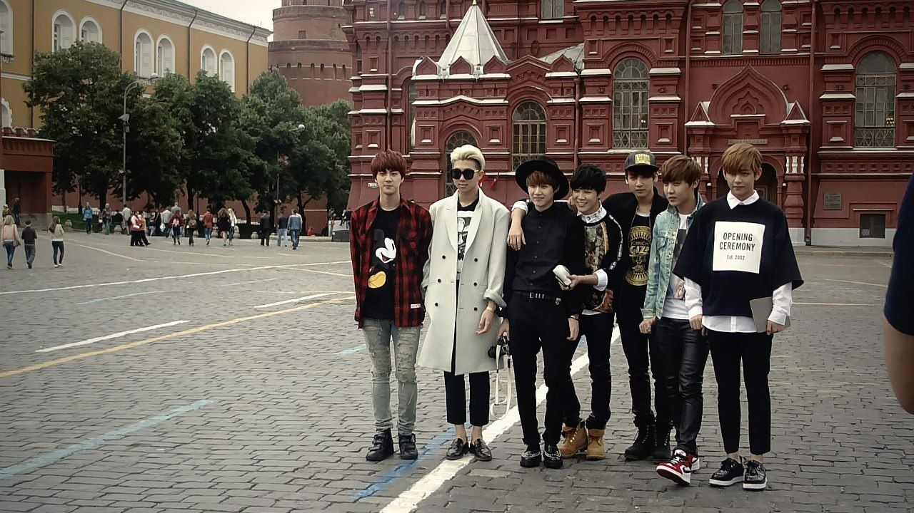

Понятие халлю также включает в себя и распространение других аспектов корейской культуры, таких, как национальная кухня, одежда, видео-игры и язык. Халлю стимулировала развитие туризма в Южной Корее. В 2014 году страну посетило 14 миллионов иностранных туристов – на 4 миллиона больше, чем в 2012-м, и в несколько раз больше, чем в 15 лет назад. Туристическая индустрия Кореи сейчас переживает настоящий расцвет.
Также причиной посещения Южной Кореи является шоппинг. Это положительно влияет на корейскую Fashion-индустрию и розничную торговлю.
«Корейская волна» подстегнула развитие рынка одежды, обуви и косметики. Ежегодно в стране продается косметической продукции больше чем на 10 триллионов вон, из них иностранцы оставляют больше 200 миллионов вон только лишь в магазинах Duty Free.
Под влиянием «корейской волны» люди начинают активно покупать различные продукты, связанные с ней. Зрители дорам загораются желанием приобрести мобильный телефон, косметику или одежду, как у героев фильма. Яркие клипы K-Pop исполнителей подталкивают поклонников к тому, чтобы выглядеть, как кумиры. Этим активно пользуются бизнесмены. Халлю активно продвигает национальные бренды, а местные знаменитости регулярно участвуют в рекламных съемках тех или иных товаров, повышая продажи в десятки раз. По мнению предпринимателей, именно «корейская волна» позволила им серьезно укрепить позиции на рынке, в том числе, и за рубежом.
- Халлю в современной России. На главную